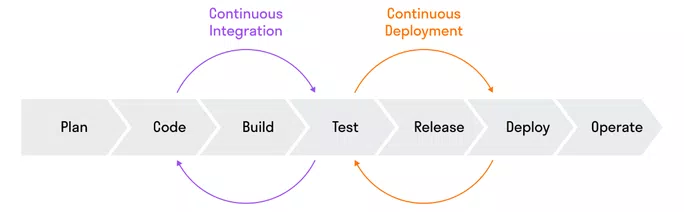

CI/CD (Continuous Integration / Continuous Deployment)— практика по автоматизации сборки, тестирования и развертывания приложений.
Continuous Integration (CI) — процесс автоматического сбора кода из разных источников (например, Git-репозиториев), выполнения тестов и сборки приложения.
Это позволяет быстро выявлять возможные проблемы и обеспечивает стабильность продукта на всех этапах разработки.
Continuous Deployment/Delivery (CD) — процесс автоматического развертывания приложения на различных стадиях, включая тестовые, стейджинг и продакшен-среды.
Цель CD — обеспечить максимально быстрое и безопасное развертывание новых версий продукта без необходимости ручного вмешательства.
Команды используют практику CI/CD, чтобы уменьшить время между созданием кода и его развертыванием в прод, постоянно повышать качество продукта и делать его работу стабильной.
CI/CD включает семь этапов: (CD)
- Plan — планирование. На этом этапе планируют разработку и поставку приложения, определяют требования и задачи проекта, распределяют ресурсы команды и ставят цели.
- Code — написание кода. Разработчики пишут код для каждой части программного продукта и создают его функционал, комментируют и документируют код, проводят ревью кода.
- Build — сборка. Система контроля версий собирает программный продукт из написанного кода, используя средства автоматической сборки; создает исполняемые файлы или пакеты для установки приложения.
- Test — тестирование. Тестировщики проверяют собранный продукт. Они проводят разные виды тестирования, в том числе автоматизированное.
- Release — релиз. Команда создает установочные пакеты, подписывает их цифровыми сертификатами и отдает продукт на проверку заказчику или тестовой группе пользователей. Если в продукте находят ошибки, то его отправляют на доработку.
- Deploy — развертывание. Программное обеспечение устанавливается на реальной или тестовой среде, чтобы заказчики и конечные пользователи могли пользоваться продуктом.
- Operate — эксплуатация. Продукт используется. Разработчики проверяют работу продукта, оптимизируют его производительность, обрабатывают возникающие ошибки, анализируют пользовательский опыт и планируют доработки продукта и разработку нового функционала.
